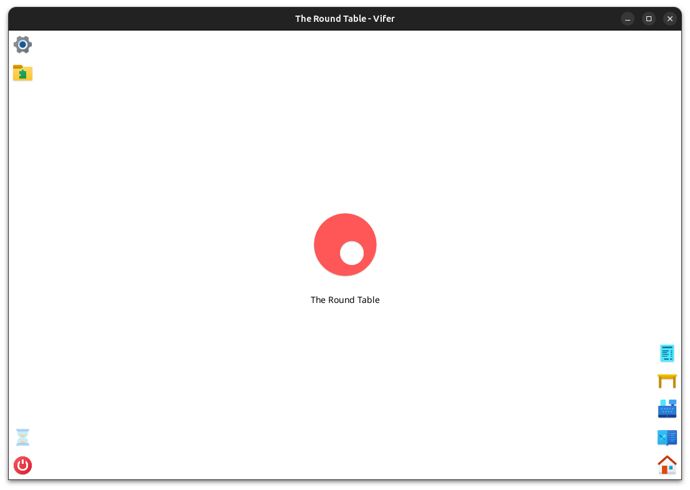

Multimedia


Tecnologías utilizadas
Java y Java FX
Equipo o Colaboradores
Borja Castellano
Fecha de creación
2024
Rol en el proyecto
Arquitectira y desarrollo
Impresión y gestión de recibos
Gestión de productos
Gestión de las mesas del local
Arquitectura micro-kernel
Software TPV para la gestión de restaurantes y bares. Permite la gestión de productos, mesas y la impresión de recibos. Además permite la visualización de estadísticas ya que todos los datos de recibos se guardan en un base de datos HSQLDB local.
El sotware está desarrollado en Java y se ha utilizado JavaFX para la interfaz gráfica. Se pude comunicar mediante ESC/POS con impresoras de tickets aunque solo está pensada para papeles de 80 mm actualmente.
En cuanto a la arquitectura del software, se ha utilizado una arquitectura micro-kernel para separar la lógica principal de la aplicación de los plugins que se pueden añadir para ampliar las funcionalidades de este. Tambien se ha utilizado un patrón de diseño MVC para separar la lógica de la interfaz gráfica junto a otros tantos patrones de diseño que permiten una fácil escalabilidad y mantenimiento del código.